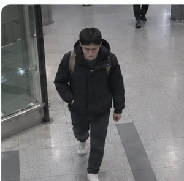
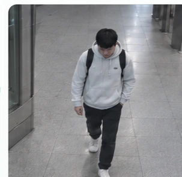
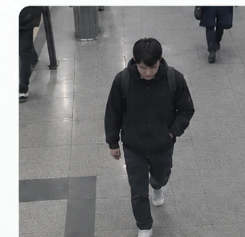
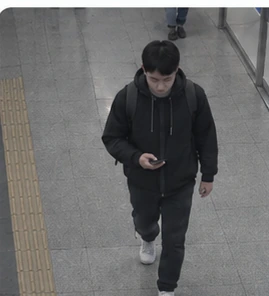

Hard example miningEffective image batch selection for identity representation
MINER deliberately fills each batch with two complementary signals: hard positives (same person, different outfits) to improve invariance, and hard negatives (different people, similar appearance) to improve discrimination.
Hard positivesame identity · different clothes

↔ same person

These cross-outfit matches are intentionally visually far apart, so the encoder learns to keep identity stable across clothing changes.
Hard negativedifferent identities · similar appearance

≈ look-alike

These identities are intentionally visually close, so the encoder learns to separate people even when clothing and overall appearance are misleading.
In one sentence: hard positives reduce invariance error, hard negatives reduce discrimination error, and MINER learns from both at once.